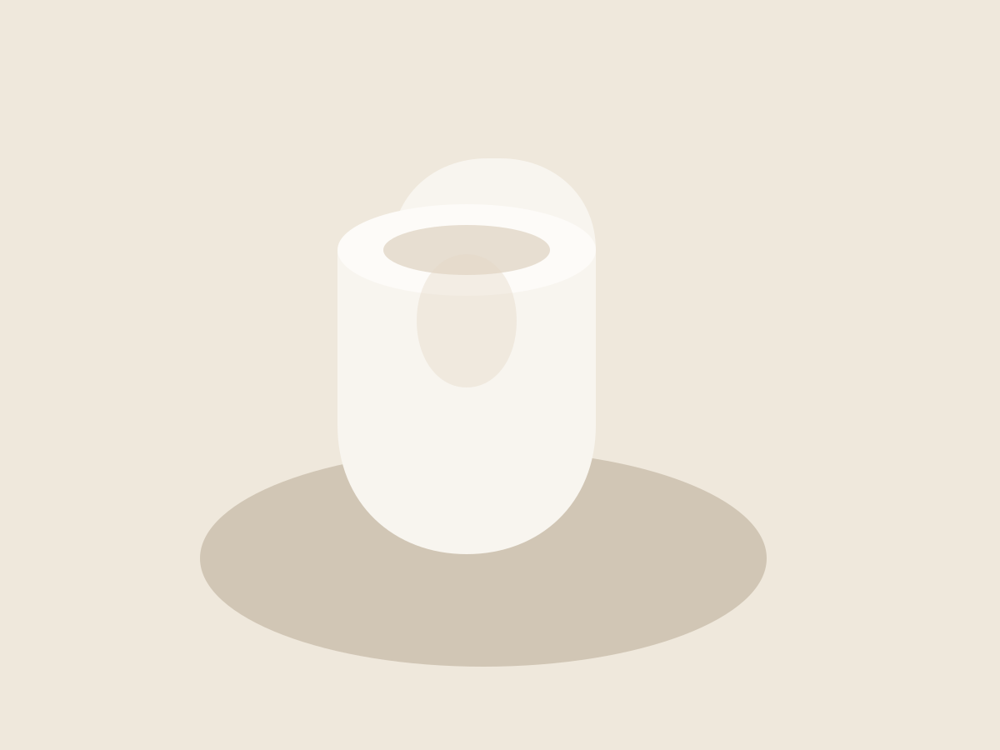
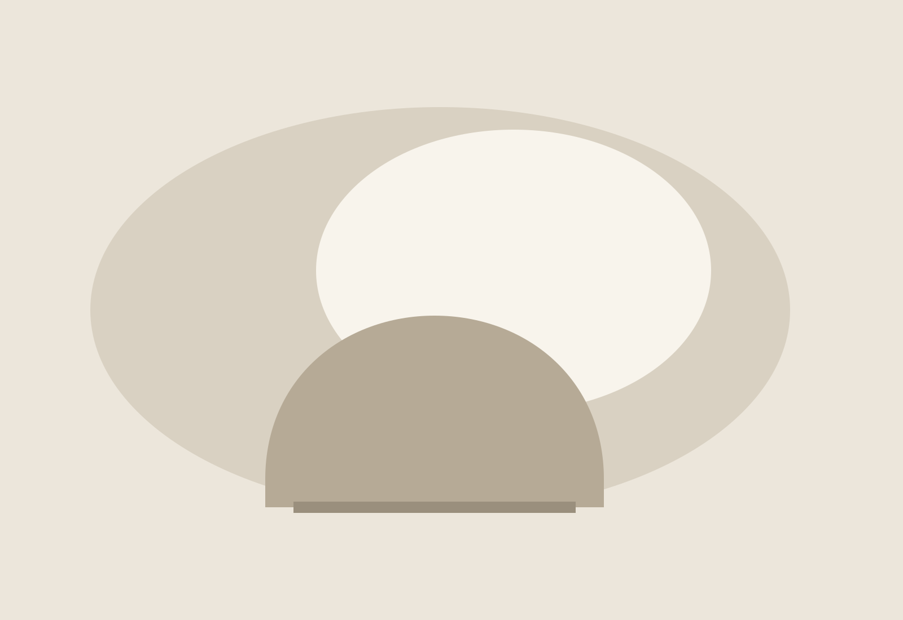

Vessel No. 01 — Ash
Hand-finished porcelain vessel for incense, stems, or nothing at all. Designed to be read by light.
€120 · Limited release
Edition 03
Spring / 2026
Independent studio for quiet objects
A letter in material, light, and silence.

We work in the pause between gesture and object. Every line is reduced until it can still breathe; every surface is tuned to hold a little weather, a little memory. We are not interested in novelty that shouts. We prefer forms that stay, that gather fingerprints, dusk, and repetition. What we release is less a product than a small companion for the hour when the room turns quiet and attention finally returns home.

Hand-finished porcelain vessel for incense, stems, or nothing at all. Designed to be read by light.
€120 · Limited release
For notes, collaborations, or private appointments: hello@atelierserein.studio